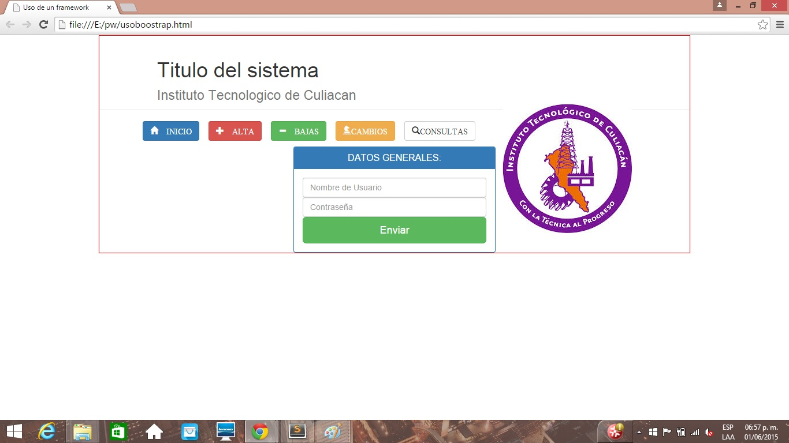
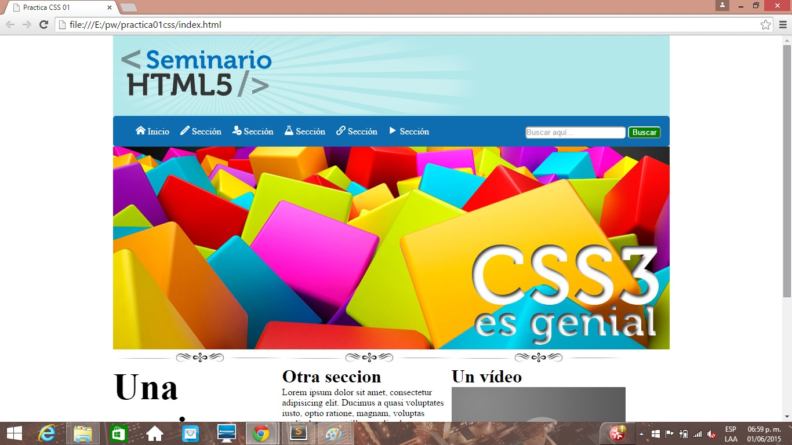
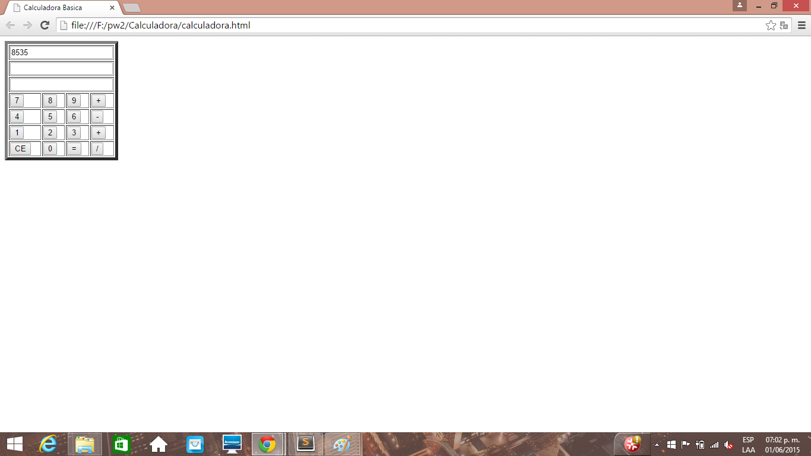
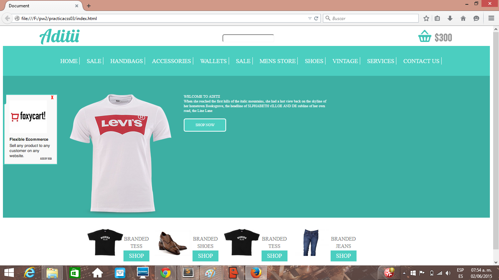
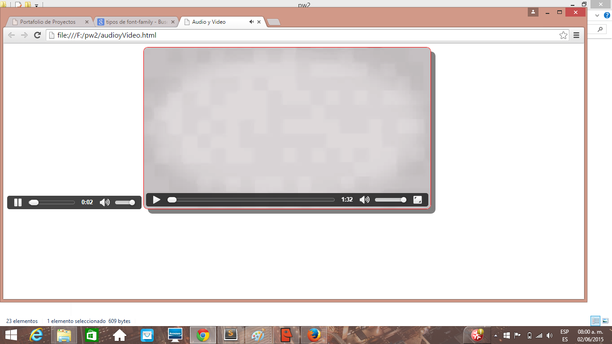
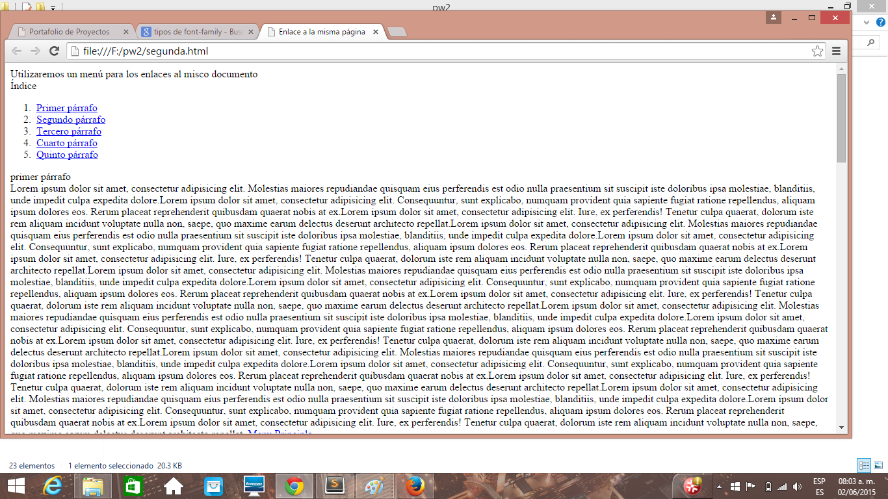
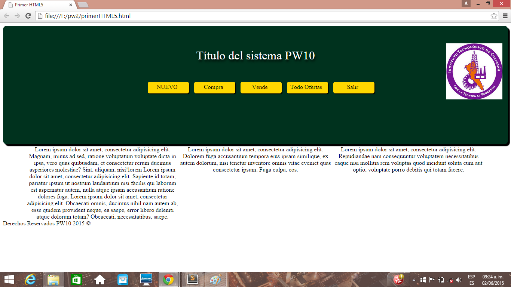
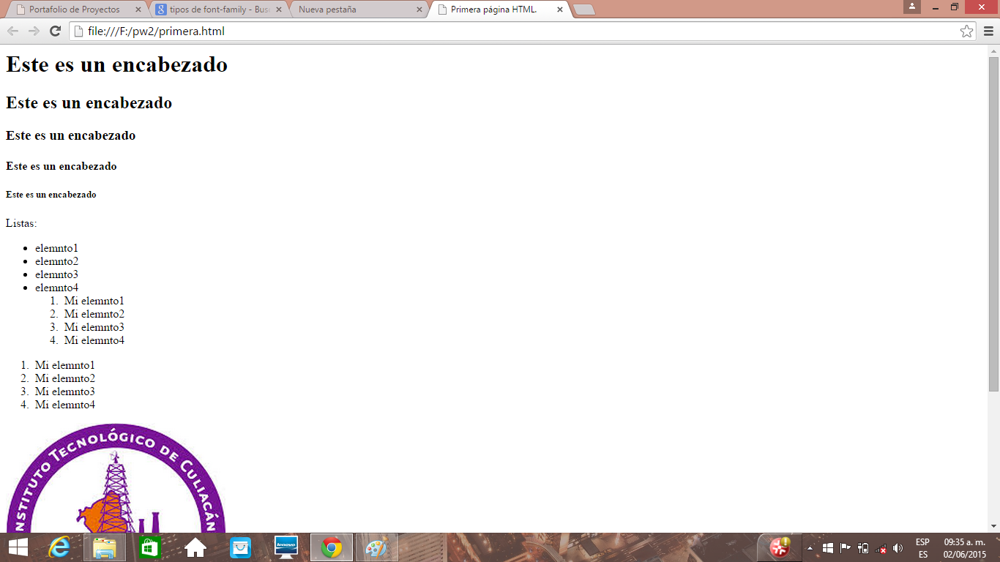

Nombre : Luis Edgar Rojo Medina
No.control:12170876 Carrera:Ing.TIC'S
Correo:Siulragde@hotmail.com
Procedencia:Instuto Tecnologico de Culiacan
Proyectos y Practicas Realizados :
Titulo: Sistema de Usuarios

Descripcion: Este es un proyecto donde se manejo la tecnologia ajax para el control de usuarios ya sea modificacion ,altas y bajas de
los usuarios Titulo: Portal de empresa

Descripcion: El diseño de un portal web siempre es importante, y en este proyecto se muestra las diferentes aplicacion de las hojas de estilos y de la utilizacion de iconos provenientes del portal Icomoon. Titulo: Calculadora Basica

Descripcion: En este proyecto se muestra la utilizacion del javascript para la construccion de eventos los cuales realizaran calculos matematicos sencillos como suma, resta,multiplicacion y division. Titulo: Portal de Ventas de Ropa

Descripcion: En esta practica se diseño junto html y css, un portal para una empresa que se interese por la venta de ropa Titulo: Practica de video y audio

Descripcion: Una pagina de internet, hoy en dia, es indispensable que tenga por lo menos un recurso multimedia Titulo: Uso de links

Descripcion: En este proyecto se muestra la utilizacion de los links para la construccion de eventos los cuales realizaran sin la necesidad de usar javascript Titulo: Practica sencilla de diseño

Descripcion: En esta practica se diseño junto html y css, los maquetados y estilos basicos para la creacion de una pagina Titulo: Practica de encabezado

Descripcion: Una pagina de internet, hoy en dia, es indispensable que tenga diferentes encabezados